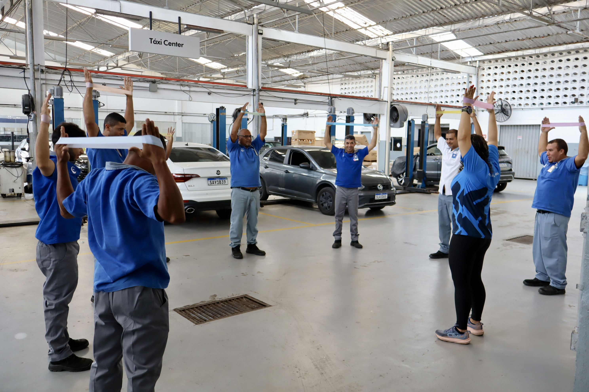
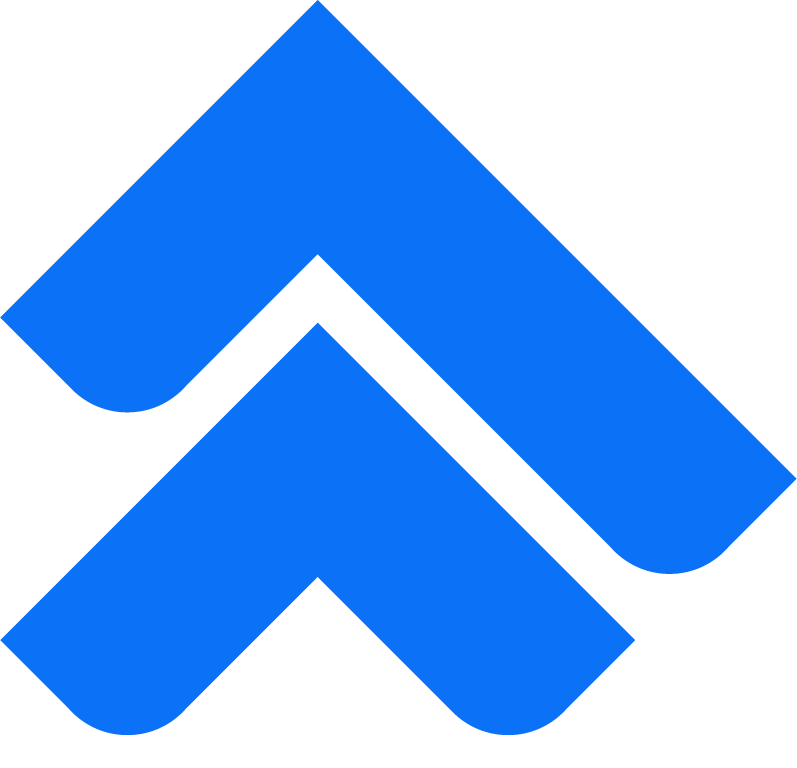
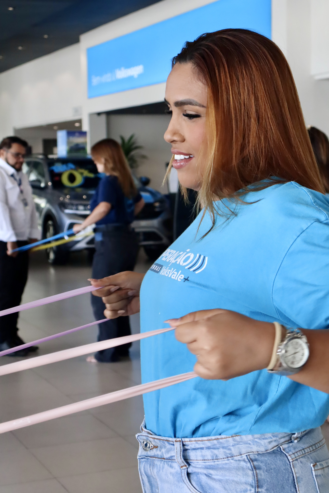
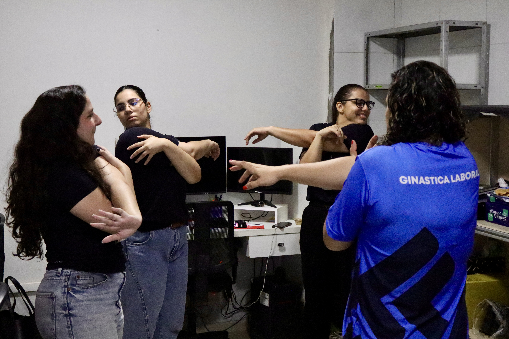
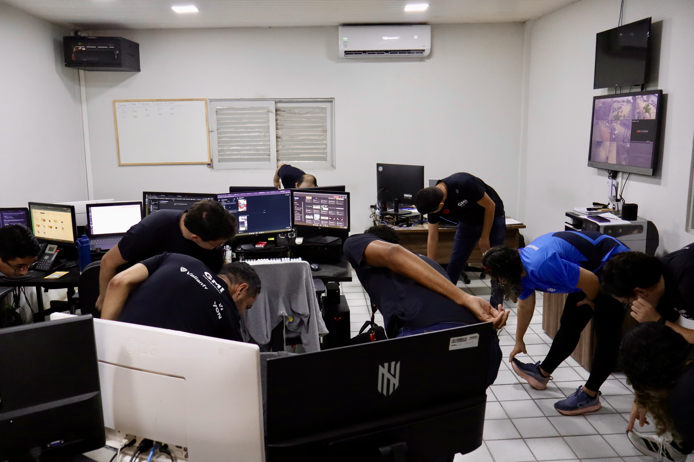
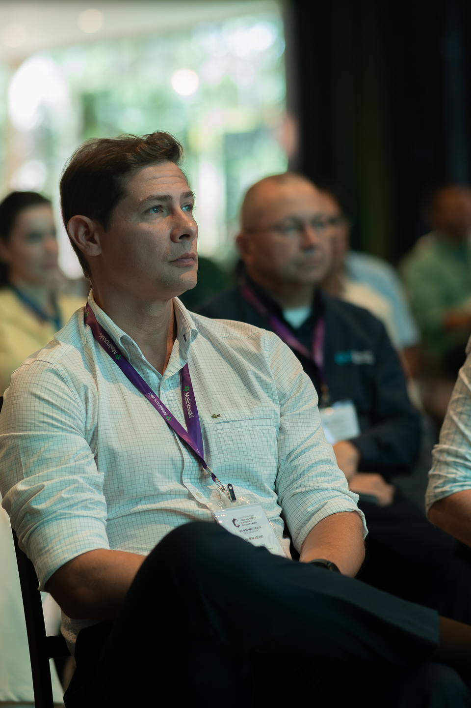
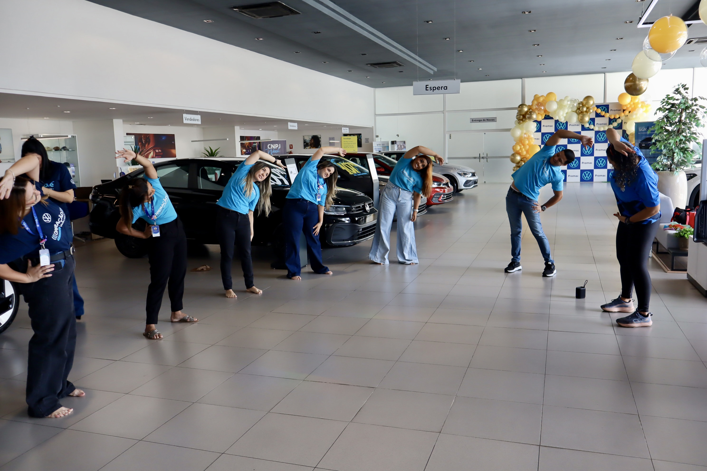

Saúde e bem-estar para empresas
Transforme a saúde
e o bem-estar
na sua empresa.
Ergonomia, ginástica laboral e qualidade de vida conectadas à realidade de quem faz seu negócio acontecer.


FITE. Presente no cuidado.Da prevenção à rotina da sua equipe.

Fisioterapia do Trabalho
Especializada em pessoas.
Especializada em pessoas.
Diferenciais FITE
Uma parceira para cuidar
da saúde da sua empresa.
Somos a FITE — Fisioterapia do Trabalho Especializada. Conectamos análise técnica, ações de prevenção e cuidado com as pessoas no ambiente corporativo.
- Soluções ajustadas ao perfil de cada empresa
- Ergonomia, movimento e qualidade de vida
- Atividades presenciais e ginástica laboral online
- Acompanhamento com indicadores e plano de ação
- Desenvolvimento de profissionais com mentoria
Desafios da sua empresa
O cuidado com a equipe precisa
de mais espaço na sua gestão?
Desconfortos na rotina de trabalho
Pouca adesão às ações de bem-estar
Postos e processos que precisam de adaptação
Dificuldade em acompanhar as ações
Necessidade de aproximar saúde e pessoas
Vamos construir um plano de cuidado
que faça sentido para o seu negócio.
Converse com a FITE ↗
Soluções FITE
Soluções para cada etapa
do cuidado com a sua equipe.
Da análise do ambiente à rotina das equipes, conectamos soluções às necessidades de cada operação.
Ergonomia e AEP / AET
Análise dos postos e processos para orientar melhorias e a gestão dos riscos ergonômicos.
Saiba mais ↗Ginástica laboral
Pausas ativas e movimento na rotina, com atividades orientadas para as equipes.
Saiba mais ↗Qualidade de vida no trabalho
Programas de prevenção e cuidado conectados às necessidades dos colaboradores.
Saiba mais ↗Palestras, SIPAT e eventos
Conteúdo e atividades para aproximar as pessoas da saúde e da prevenção.
Saiba mais ↗Gestão de riscos ergonômicos
Priorização de ações, indicadores e acompanhamento para apoiar a gestão.
Saiba mais ↗Inclusão e retorno ao trabalho
Avaliação e adaptação de postos e processos para apoiar a reintegração ao trabalho.
Saiba mais ↗Exoesqueletos e inovação
Avaliação, implementação e acompanhamento de tecnologias nas operações.
Saiba mais ↗Mentoria profissional
Desenvolvimento técnico e visão consultiva para profissionais de saúde do trabalhador.
Saiba mais ↗Quais soluções fazem sentido para sua empresa?
Solicitar um orçamento ↗FITE na prática
O cuidado acontece
onde as pessoas estão.
Atividades em grupo com orientação e faixas elásticas.
Conhecer a solução ↗
Atividades de mobilidade integradas ao ambiente de trabalho.
Conhecer a solução ↗
Momentos de orientação e movimento durante a jornada.
Conhecer a solução ↗Produtos FITE
Conhecimento que acompanha
o seu desenvolvimento.
Ebooks, materiais de apoio e mentoria para levar o aprendizado à prática.
Ebooks
Conteúdos sobre ergonomia, gestão de riscos e saúde do trabalhador.
Explorar ebooks ↗Materiais de apoio
Checklists e planilhas para apoiar a organização do trabalho técnico.
Ver todos os produtos ↗Mentoria
Acompanhamento para ampliar a visão técnica e a atuação consultiva.
Conhecer treinamentos e mentoria ↗Artigos de Helmar Aquino
Conhecimento para cuidar
melhor das pessoas.
Ergonomia no trabalho: como ela aumenta a produtividade?
Como a organização das atividades e do ambiente se relaciona com o trabalho cotidiano.
Ler artigo ↗Afinal, o que é ergonomia?
Uma introdução ao campo da ergonomia e às suas áreas de atuação.
Ler artigo ↗Segurança do trabalho: entenda o que é e suas principais ações
Conceitos e práticas que compõem a prevenção nos ambientes de trabalho.
Ler artigo ↗
Liderança técnica
Conheça Helmar Aquino.
Diretor da FITE, fisioterapeuta do trabalho e ergonomista, Helmar reúne experiência em gestão de ergonomia, saúde ocupacional e implementação de tecnologias no ambiente industrial.
Sua atuação conecta a prática de campo à gestão corporativa e ao desenvolvimento de profissionais da área.
.jpeg)
.jpeg)
Participações da FITE em eventos e encontros técnicos
Presença e conteúdo
A marca também aparece em conversas, eventos e educação corporativa.
Participações técnicas que levam a experiência da FITE para debates sobre saúde mental, ergonomia, segurança ocupacional e gestão de riscos em operações industriais e florestais.
15º WSSO - Workshop de Saúde, Segurança Ocupacional e de Processos
Helmar Aquino participou como Diretor da FITE Consultoria com a palestra NR 1 e NR 17 - saúde mental em foco.
5º Encontro Brasileiro de Segurança, Saúde Ocupacional e Processo Florestal
Participação como palestrante no painel de gestão integrada de riscos, processo, conduta e saúde psicossocial no trabalho rural.


.jpeg)
.jpeg)
Nossos diferenciais
Cuidado próximo.
Atuação com método.
Um caminho que conecta diagnóstico, ação e acompanhamento.
A realidade vem primeiro
Escuta das equipes e análise dos postos, processos e necessidades da operação.
Prioridades claras
Um plano de trabalho definido a partir do contexto e dos objetivos da empresa.
Presença na rotina
Intervenções, atividades e orientações conectadas ao dia a dia dos colaboradores.
Gestão com informação
Indicadores e registros para acompanhar a execução e orientar os próximos passos.
Onde atuamos
Vamos conversar sobre a sua região.
A FITE atua em João Pessoa, Recife e Campina Grande. Informe sua cidade para consultar as possibilidades de atendimento à sua empresa.
João Pessoa / PBRecife / PECampina Grande / PB
Consultar atendimento
Trabalhe conosco
Faça parte dessa transformação.
Atua com saúde do trabalhador, ergonomia ou ginástica laboral? Apresente sua experiência e sua região à FITE.
Conheça o Trabalhe conosco ↗Vamos conversar
Uma solução que começa
pela sua realidade.
Conte com a FITE para planejar o cuidado com a sua equipe. Selecione os serviços e vamos pensar nos próximos passos juntos.
Você conta o que precisaConversamos sobre o cenárioConstruímos uma proposta
